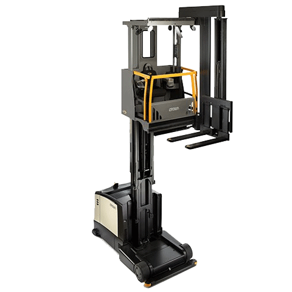
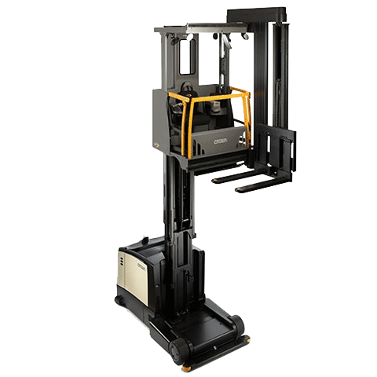

Serie TSP 7000
La carretilla trilateral de la serie TSP 7000 permite al operario ubicar y retirar más mercancías del almacén. El mástil MonoLift ofrece una visibilidad y una estabilidad excelentes a todas las alturas, hasta los 17145 mm.

SERIE TSP 6500
La serie TSP 6500 es una carretilla trilateral polivalente que alcanza una altura máxima de 13485 mm. Es capaz de abordar una amplia gama de necesidades de almacén, incluida la manipulación de pallets completos y preparación de pedidos.